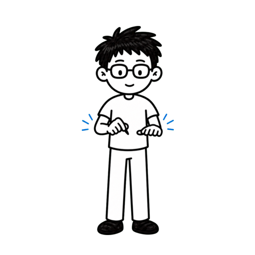
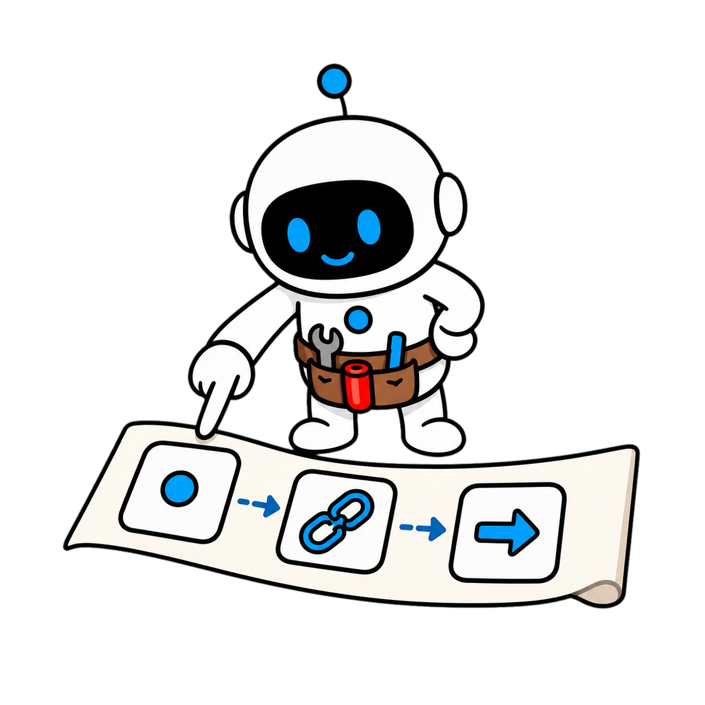

More help, weaker judgment?


More help,weakerjudgment?
More help, weaker judgment?
Assistant or tool for thought

Microsoft Research Assistant or tool for thought
Assistant or tool for thought
Assistant or tool for thought
Immediate gains, uneven effects

Immediategains,uneveneffects
Build a thinking card

Build athinkingcard
Save this practical framework

Save it Keep the thought-preservation cardUse AI to provoke thought
Keep the thought-preservation cardUse AI to provoke thought
Keep the thought-preservation cardUse AI to provoke thought
Chapter 2
Name the thinking at risk
Name the thinking to preserve

Delegate reliable completion
Delegate reliablecompletion


Judgment is a deliverable
Judgment is adeliverable
Write the human learning goal
≠

Write the human learninggoal
Mark risky outsourcing points

Mark riskyoutsourcingpoints
Easy review can reduce scrutiny


Easy reviewcan reducescrutiny
Attempt before assistance

Attemptbeforeassistance
1.Define the human goal
2.Protect hypotheses and trade-offs
3.Leave an independent attempt
1.Define the human goal
2.Protect hypotheses and trade-offs
3.Leave an independent attempt
1.Define the human goal
2.Protect hypotheses and trade-offs
3.Leave an independent attempt
Chapter 3
Make AI expose tension
Make AI expose tension

Smooth answers hide conflicts


Smoothanswers hideconflicts
Keep competing goals together


Keepcompetinggoalstogether
Keep competing goals together
Compare two views
Compare twoviews
Ask decision-changing questions
Askdecision-changingquestions
Prototypes provoke thought
≠

Prototypes provokethought
Direction is not universal proof
Direction isnotuniversalproof
1.Keep conflict visible
2.Compare plausible explanations
3.Pursue pivotal questions
1.Keep conflict visible
2.Compare plausible explanations
3.Pursue pivotal questions
1.Keep conflict visible
2.Compare plausible explanations
3.Pursue pivotal questions
Chapter 4
Keep reasoning visible
Keep the reasoning trail

Preserve judgment and confidence

≠

Preserve judgment andconfidence
Separate fact, source, inference
Separatefact,source,inference
Find the strongest counterevidence
Find thestrongestcounterevidence
Record the turning point
Record theturning point
Record the turning point
Restate without the answer
Restate without theanswer

Make influence reviewable
Makeinfluencereviewable
1.Preserve each revision
2.Separate evidence from inference
3.Restatement checks understanding
1.Preserve each revision
2.Separate evidence from inference
3.Restatement checks understanding
1.Preserve each revision
2.Separate evidence from inference
3.Restatement checks understanding
Chapter 5
Reserve human judgment
Reserve human judgment

Humans own irreversible choices
Humans own irreversiblechoices
Approval includes uncertainty

Approvalincludesuncertainty
Recommend as risk rises

Recommend asrisk rises
Name each owner
Name eachowner
Fatigue reduces scrutiny
Fatiguereducesscrutiny
Spend attention on direction
Spendattention ondirection
1.Humans own high-risk decisions
2.Approval includes consequences
3.Focus attention on key gates
1.Humans own high-risk decisions
2.Approval includes consequences
3.Focus attention on key gates
1.Humans own high-risk decisions
2.Approval includes consequences
3.Focus attention on key gates
Chapter 6
Use the thought card
Use the four-field card

Field one: human goal
Field one:human goal
Field two: AI role
Field two: AIrole
Field two: AI role
Field three: evidence action
Field three:evidenceaction
Field four: human gate
Field four:human gate
Attempt, challenge, compare, decide
≠
Attempt, challenge,compare, decide
A synthesis, not an official template
A synthesis,not anofficialtemplate
1.State the human goal
2.Define role and prohibited zone
3.Finish at a named human gate
1.State the human goal
2.Define role and prohibited zone
3.Finish at a named human gate
1.State the human goal
2.Define role and prohibited zone
3.Finish at a named human gate
Preserve thought, then gain speed

Preservethought, thengain speed
Do not replace understanding
≠
Do not replaceunderstanding
Write four lines next time
Write fourlines nexttime
Microsoft Research draws a useful distinction.
Assistant mode optimizes completion, while tool-for-thought mode surfaces
tension, alternate interpretations, and probing questions.
The evidence is mixed.
AI can improve immediate output, yet some studies find narrower ideas, less
critical engagement, or weaker retention.
This episode is not an argument for avoiding AI.
We will build a thought-preservation card that keeps efficiency and judgment
together, while separating Microsoft’s prototypes from our synthesis.
This video is packed with practical, high-value insights to help you get
better at using AI.
It's a longer one, so follow Tiny Agent and save it so you don't lose it.
The first step is not choosing a model.
It is naming the kind of human thinking this task is supposed to preserve.
For formatting, proofreading, or organizing decided fields, reliable
completion may be the real goal.
Assistant mode often fits.
When work requires a view, causal understanding, evidence comparison, or
consequences, judgment is part of the deliverable.
Write one human learning goal first.
For example: I must explain why this option wins, not merely receive a
polished recommendation.
Mark the dangerous outsourcing points.
Hypotheses, counterexamples, values, and uncertainty often matter more than
polished prose.
Microsoft also notes a low-stakes review risk: people may inspect less
critically when the system answer looks like a sensible default.
Make a minimal independent attempt first.
Three rough hypotheses turn the exchange into comparison instead of
surrender to the first fluent answer.
Chapter recap.
First, define the human thinking this task must preserve.
Second, treat hypotheses, counterexamples, and trade-offs as high-risk
outsourcing points.
Third, leave a minimal independent attempt before you read the AI answer.
The second step is not asking AI to sound more certain.
Ask it to expose the tensions hiding inside the problem.
A conventional assistant quickly compresses ambiguity into a smooth answer.
Unresolved conflicts may disappear with the rough edges.
A tool for thought keeps competing goals visible: growth and privacy, speed
and maintainability, automation and accountability.
Request two plausible interpretations.
This prevents the first coherent story from winning by presentation alone.
Ask what would change the conclusion.
Which evidence is missing, and which false assumption would collapse the
current option?
The prototypes Microsoft describes explore these mechanisms by highlighting
tensions, offering alternate perspectives, and posing probing questions.
Keep the evidence boundary clear.
Those prototypes show a design direction;
they do not prove that every interface or task will reliably improve
Chapter recap.
judgment.
First, keep conflicting goals visible at the same time.
Second, compare at least two interpretations that could reasonably be true.
Third, pursue only questions that can materially change the decision.
The third step is keeping the reasoning trail on the table instead of saving
only the final answer.
Record your initial judgment and confidence.
When AI responds, append what changed and why instead of overwriting it.
Bind important claims to evidence.
Separate primary sources, observed facts, and inference so fluent language
cannot hide a leap.
Ask for the strongest counterevidence, not more supporting points.
A judgment that survives challenge is more informative than repeated
When the conclusion changes, preserve why: new evidence, a changed
agreement.
definition, or merely more persuasive language.
At the end, close the answer and explain the causal chain in your own words.
Retrieval without the screen is a simple check on understanding and
This process does not remove bias, but it makes the path of influence
retention.
reviewable and gives a later retrospective something more reliable than
Chapter recap.
memory.
First, preserve the initial judgment and every meaningful revision.
Second, separate facts, sources, and inference in the record.
Third, test understanding by restating the reasoning without the answer.
The fourth step is deciding which gates require a human to make the final
Value choices, irreversible effects, rights, or public commitments should
judgment.
not pass automatically because AI reports high confidence.
A human gate is more than approval.
The owner should see alternatives, evidence, uncertainty, and the worst
acceptable consequence.
An Agent can execute low-risk, reversible steps with a log.
As risk rises, switch to recommendation.
Name who defines success, approves exceptions, and can stop when results
deteriorate.
Watch for a trap: a reliable-seeming system makes tired reviewers reduce
scrutiny exactly when guardrails matter.
A good AI workflow does not insert a person everywhere.
It reserves scarce human attention for the points that determine direction
and consequence.
Chapter recap.
First, keep value choices and irreversible decisions behind a human gate.
Second, approval must include evidence, uncertainty, and consequences.
Third, concentrate human attention on the moments that change direction.
Finally, compress the method into a four-field thought-preservation card.
Field one is the human goal: the understanding, judgment, or transferable
ability the task must produce.
Field two is the AI role: organize, challenge, compare, or execute, plus the
thinking it must not replace.
Field three is the evidence action: primary sources, strongest
counterevidence, unknowns, and evidence that would change the conclusion.
Field four is the human gate: who decides to continue, reverse, or publish,
with a short reason.
Use the card in order: make an independent attempt, ask AI to expose
tension, compare the evidence, and finish with a reasoned human decision.
This card is our practical synthesis of the principles in Microsoft’s
article, not an official Microsoft template.
Its purpose is to make preserved thinking visible.
Chapter recap.
First, state the human learning and judgment goal.
Second, define the AI role, evidence action, and prohibited zone.
Third, finish the trade-off at a named human judgment gate.
Connect the method from end to end: name the thinking you cannot outsource,
ask AI to expose tension, preserve the reasoning trail, and protect the
human judgment gate.
Efficiency is not the enemy.
The real risk is replacing the understanding the task was meant to create
with a faster answer, without noticing that the deliverable changed.
Before your next AI session, write four lines: human goal, AI role, evidence
action, and human gate.
Then begin the conversation.
Follow Tiny Agent.
How can
an AI Agent
erode
judgment?


Tiny Agent
Get better at using AI.